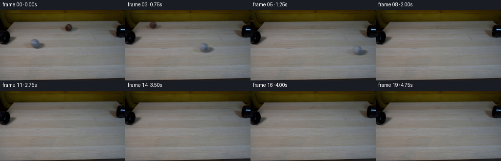
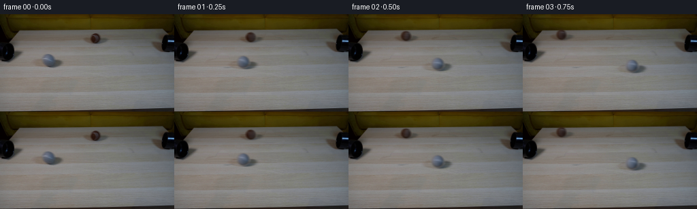

CODING AGENTS AS PIXEL WORLD MODELS
traex/GPT-6.1-Sol · 0179
点击播放 · 原生 RGB 像素
逐轮保存的候选
回放视频、检查图与代码变化。
每份候选均可单独播放。实际图片检查记录在下方工具轨迹中。
候选 01播放与检查图
点击播放 · 原生 RGB 像素


展开代码变化
--- 上一保存版本
+++ 本次保存版本
@@ -0,0 +1,155 @@
+from pathlib import Path
+import numpy as np
+from PIL import Image
+from scipy.ndimage import gaussian_filter, map_coordinates
+import artifact_io
+
+ROOT = Path(__file__).resolve().parent
+W,H=256,144
+Y,X=np.mgrid[:H,:W]
+SOURCE=np.asarray(Image.open(ROOT/'first_frame.png').convert('RGB')).astype(np.float64)
+
+# Recover the stationary wood grain by extending the same scanline on either
+# side of each small moving object. All of the rest of the image is untouched.
+def recover_table(image,cx,cy,r,left,right):
+ sphere=np.sqrt(((X-cx)/r)**2+((Y-cy)/r)**2)
+ broad=np.sqrt(((X-(cx+1.0))/(2.9*r))**2+((Y-(cy+.55*r))/(.77*r))**2)
+ removal=np.maximum(np.clip((1.32-sphere)/.25,0,1),np.clip((1.12-broad)/.22,0,1))
+ removal*=((X>left-2)&(X<right+2)&(Y>cy-r-3)&(Y<cy+r+7))
+ repaired=image.copy()
+ for y in range(max(0,int(cy-r-4)), min(H,int(cy+r+8))):
+ xs=np.r_[np.arange(max(32,left-17),left-3),np.arange(right+4,min(W-12,right+24))]
+ if len(xs)<8: continue
+ p=np.stack([np.ones(len(xs)),(xs-cx)/50,((xs-cx)/50)**2],1)
+ coef=np.linalg.lstsq(p,image[y,xs],rcond=None)[0]
+ pp=np.stack([np.ones(W),(np.arange(W)-cx)/50,((np.arange(W)-cx)/50)**2],1)
+ predicted=pp@coef
+ # A clean adjacent strip contributes the tiny sensor/wood irregularities.
+ srcx=np.clip(np.arange(W)+int(right-cx+24),0,W-1)
+ noise=image[y,srcx]-gaussian_filter(image[y],(2.5,0))[srcx]
+ predicted+=noise*.65
+ m=removal[y,:,None]
+ repaired[y]=image[y]*(1-m)+predicted*m
+ return repaired,removal
+
+BG,grey_removal=recover_table(SOURCE,71.0,67.0,8.5,46,96)
+BG,brown_removal=recover_table(BG,140.0,35.25,7.15,120,164)
+
+class Ball:
+ def __init__(self,cx,cy,r,vx,slope):
+ self.cx,self.cy,self.r,self.vx,self.slope=cx,cy,r,vx,slope
+ nx=(X-cx)/r; ny=(Y-cy)/r
+ q=nx*nx+ny*ny; z=np.sqrt(np.maximum(0,1-q))
+ design=np.stack([np.ones_like(X),nx,ny,z],-1)
+ core=q<.72
+ self.coef=np.linalg.lstsq(design[core],SOURCE[core],rcond=None)[0]
+ base=design@self.coef
+ residual=SOURCE-base
+ # Preserve the photographic felt and curved tennis-ball seam, while
+ # separating it from the illumination so that the surface can roll.
+ residual=np.clip(residual,-32,36)
+ residual*=np.clip((1.05-q)/.22,0,1)[...,None]
+ self.residual=gaussian_filter(residual,(.24,.24,0))
+ self.orig=np.array([cx,cy])
+ # Save an actual, colored contact shadow from the supplied photograph.
+ self.x0=int(cx-3.4*r);self.x1=int(cx+3.65*r)+1
+ self.y0=int(cy-r-3);self.y1=int(cy+r+7)
+ yy,xx=np.mgrid[self.y0:self.y1,self.x0:self.x1]
+ sph=np.sqrt(((xx-cx)/r)**2+((yy-cy)/r)**2)
+ raw=np.clip(SOURCE[self.y0:self.y1,self.x0:self.x1]/np.maximum(1,BG[self.y0:self.y1,self.x0:self.x1]),.32,1.12)
+ weight=np.clip((sph-1.02)/.30,0,1)
+ # Under the sphere, complete the contact shadow rather than copying
+ # the sphere into the shadow matte.
+ contact=.40*np.exp(-(((xx-cx-3)/(.93*r))**2+((yy-cy-.78*r)/(.31*r))**2)/2)
+ under=1-contact[...,None]*np.array([.93,1.00,1.02])
+ self.shadow=(raw*weight[...,None]+under*(1-weight[...,None]))
+ # Only pixels belonging to the recovered shadow participate.
+ removal=grey_removal if r>8 else brown_removal
+ self.shadow=1+(self.shadow-1)*removal[self.y0:self.y1,self.x0:self.x1,None]
+ # Smooth the outermost boundary of the sprite.
+ edge=np.minimum.reduce([xx-self.x0,self.x1-1-xx,yy-self.y0,self.y1-1-yy])
+ self.shadow=1+(self.shadow-1)*np.clip(edge/2,0,1)[...,None]
+
+ def pos(self,t):
+ # Small rolling resistance, with a straight, offset lane for each ball.
+ d=self.vx*t-np.sign(self.vx)*2.0*t*t
+ return self.cx+d,self.cy+self.slope*d,d
+
+ def paint(self,canvas,t):
+ cx,cy,d=self.pos(t)
+ radius=self.r*(1+.0018*(cy-self.cy))
+ scale=radius/self.r
+ # Contact shadows translate with their own sphere, never with camera.
+ x0=max(0,int(np.floor(cx+(self.x0-self.cx)*scale))-1)
+ x1=min(W,int(np.ceil(cx+(self.x1-self.cx)*scale))+1)
+ y0=max(0,int(np.floor(cy+(self.y0-self.cy)*scale))-1)
+ y1=min(H,int(np.ceil(cy+(self.y1-self.cy)*scale))+1)
+ if x1<=x0 or y1<=y0:return
+ yy,xx=np.mgrid[y0:y1,x0:x1]
+ sx=(xx-cx)/scale+self.cx-self.x0
+ sy=(yy-cy)/scale+self.cy-self.y0
+ ratios=np.stack([map_coordinates(self.shadow[:,:,c],[sy,sx],order=1,mode='constant',cval=1) for c in range(3)],-1)
+ canvas[y0:y1,x0:x1]*=ratios
+ # Four subpixel samples per dimension, with a slightly soft photographic
+ # silhouette. RGB is integrated in premultiplied form.
+ x0=max(0,int(cx-radius-3));x1=min(W,int(cx+radius+4))
+ y0=max(0,int(cy-radius-3));y1=min(H,int(cy+radius+4))
+ if x1<=x0 or y1<=y0:return
+ SS=4
+ yy,xx=np.mgrid[y0*SS:y1*SS,x0*SS:x1*SS].astype(float)
+ xx=(xx+.5)/SS-.5; yy=(yy+.5)/SS-.5
+ nx=(xx-cx)/radius;ny=(yy-cy)/radius
+ q=nx*nx+ny*ny; z=np.sqrt(np.maximum(0,1-q))
+ alpha=np.clip((1.10-np.sqrt(q))/.20,0,1)
+ # Unit-sphere inverse rolling rotation about an in-plane axle.
+ theta=d/self.r
+ norm=np.sqrt(1+self.slope*self.slope)
+ ax=-self.slope/norm;ay=1/norm
+ ct=np.cos(theta);st=np.sin(theta)
+ dot=ax*nx+ay*ny
+ tx=nx*ct-ay*z*st+ax*dot*(1-ct)
+ ty=ny*ct+ax*z*st+ay*dot*(1-ct)
+ tz=z*ct-(ax*ny-ay*nx)*st
+ # An unobserved hemisphere is continued with symmetric photographic
+ # texture. Illumination always stays in camera coordinates.
+ tx=np.where(tz<0,-tx,tx)
+ u=self.cx+self.r*tx;v=self.cy+self.r*ty
+ texture=np.stack([map_coordinates(self.residual[:,:,c],[v,u],order=1,mode='nearest') for c in range(3)],-1)
+ # A slight deterministic felt mottling prevents flat synthetic surfaces.
+ felt=(np.sin(tx*90+ty*37)*np.sin(ty*77-tx*19))*.8
+ lighting=np.stack([np.ones_like(nx),nx,ny,z],-1)@self.coef
+ col=np.clip(lighting+texture+felt[...,None],0,255)
+ # Farther from the current viewpoint the faint seam is still continuous.
+ a=alpha.reshape(y1-y0,SS,x1-x0,SS).mean((1,3))
+ premul=(col*alpha[...,None]).reshape(y1-y0,SS,x1-x0,SS,3).mean((1,3))
+ canvas[y0:y1,x0:x1]=canvas[y0:y1,x0:x1]*(1-a[...,None])+premul
+
+GREY=Ball(71.0,67.0,8.5,120,.095)
+BROWN=Ball(140.0,35.25,7.15,-113,.064)
+# Foreground lips of the fixed pipes correctly occlude a ball that passes
+# behind them. Nothing about the apparatus changes during the experiment.
+foreground=((X<29)|(X>234))&(Y>22)&(Y<71)&(SOURCE.mean(2)<51)
+
+def render(t):
+ im=BG.copy()
+ BROWN.paint(im,t)
+ GREY.paint(im,t)
+ im[foreground]=SOURCE[foreground]
+ return im
+
+def main():
+ frames=[SOURCE.astype(np.uint8)]
+ # A short shutter exposure gives a restrained directional motion blur,
+ # without turning fast-moving balls into long translucent trails.
+ for i in range(1,20):
+ t=i/4
+ samples=[render(t+off) for off in np.linspace(-.014,.014,7)]
+ frame=np.clip(np.mean(samples,0)+.5,0,255).astype(np.uint8)
+ frames.append(frame)
+ frames=np.stack(frames)
+ assert np.array_equal(frames[0],np.asarray(Image.open(ROOT/'first_frame.png')))
+ (ROOT/'.tmp').mkdir(exist_ok=True)
+ Image.fromarray(np.clip(BG+.5,0,255).astype(np.uint8)).save(ROOT/'.tmp/background.png')
+ artifact_io.save(frames,ROOT)
+
+if __name__=='__main__':main()
候选 02播放与检查图
点击播放 · 原生 RGB 像素
展开代码变化
--- 上一保存版本
+++ 本次保存版本
@@ -13,8 +13,8 @@
# side of each small moving object. All of the rest of the image is untouched.
def recover_table(image,cx,cy,r,left,right):
sphere=np.sqrt(((X-cx)/r)**2+((Y-cy)/r)**2)
- broad=np.sqrt(((X-(cx+1.0))/(2.9*r))**2+((Y-(cy+.55*r))/(.77*r))**2)
- removal=np.maximum(np.clip((1.32-sphere)/.25,0,1),np.clip((1.12-broad)/.22,0,1))
+ broad=np.sqrt(((X-(cx+1.0))/(2.9*r))**2+((Y-(cy+.40*r))/(.90*r))**2)
+ removal=np.maximum(np.clip((1.32-sphere)/.25,0,1),np.clip((1.30-broad)/.22,0,1))
removal*=((X>left-2)&(X<right+2)&(Y>cy-r-3)&(Y<cy+r+7))
repaired=image.copy()
for y in range(max(0,int(cy-r-4)), min(H,int(cy+r+8))):
@@ -57,7 +57,7 @@
yy,xx=np.mgrid[self.y0:self.y1,self.x0:self.x1]
sph=np.sqrt(((xx-cx)/r)**2+((yy-cy)/r)**2)
raw=np.clip(SOURCE[self.y0:self.y1,self.x0:self.x1]/np.maximum(1,BG[self.y0:self.y1,self.x0:self.x1]),.32,1.12)
- weight=np.clip((sph-1.02)/.30,0,1)
+ weight=np.clip((sph-.93)/.16,0,1)
# Under the sphere, complete the contact shadow rather than copying
# the sphere into the shadow matte.
contact=.40*np.exp(-(((xx-cx-3)/(.93*r))**2+((yy-cy-.78*r)/(.31*r))**2)/2)
可观测工具轨迹
实际执行的命令与返回图片。
命令 1exit 0
/bin/bash -lc 'ls -la && cat prompt.txt && cat GENERATION_RULES.md'
命令 2exit 0
/bin/bash -lc "cat artifact_io.py && python - <<'PY'
from PIL import Image
import numpy as np
im=Image.open('first_frame.png');print(im.size)
a=np.array(im); print(a.shape)
im=im.resize((96,54)); a=np.array(im)
pal=np.array([[20,20,20],[70,65,60],[140,120,95],[180,150,110],[210,180,140],[235,220,185],[180,180,170],[230,230,220],[110,110,105]])
cs='@#bwt.+=g'
d=((a[:,:,None,:].astype(float)-pal[None,None,:,:])**2).sum(3).argmin(2)
for row in d:print(''.join(cs[x] for x in row))
PY"命令 3exit 0
/bin/bash -lc "python - <<'PY'
from PIL import Image
import numpy as np
im=np.array(Image.open('first_frame.png'))
for y in range(0,144,8):
print(y,' '.join(f'{tuple(im[y,x])}' for x in range(0,256,16)))
a=np.array(Image.fromarray(im).resize((128,72))).mean(2);cs='@%#*+=-:. '
print('GRAYSCALE')
for row in a:print(''.join(cs[min(9,int(v/256*10))] for v in row))
PY"命令 4exit 0
/bin/bash -lc "python - <<'PY'
from PIL import Image
import numpy as np
from scipy import ndimage
im=np.array(Image.open('first_frame.png')).astype(float)
m=im.mean(2)<65
lab,n=ndimage.label(m)
for k in range(1,n+1):
yy,xx=np.where(lab==k)
if len(xx)>8: print('dark',len(xx), (xx.min(),yy.min(),xx.max(),yy.max()), (xx.mean(),yy.mean()))
cs='@%#*+=-:. '
for x1,y1,x2,y2 in [(0,0,48,78),(118,22,165,48),(48,50,99,82),(224,0,256,64)]:
print('CROP',x1,y1,x2,y2)
a=im[y1:y2,x1:x2].mean(2)
for row in a:print(''.join(cs[min(9,int(v/256*10))] for v in row))
PY"命令 5exit 0
/bin/bash -lc "python - <<'PY'
from PIL import Image
import numpy as np
im=np.array(Image.open('first_frame.png')).astype(float)
# Print warm vs blue vs dark object masks in object crops.
for x1,y1,x2,y2 in [(50,48,101,84),(120,20,164,49)]:
print('region',x1,y1)
for y in range(y1,y2):
row=''
for x in range(x1,x2):
r,g,b=im[y,x]
if (r+g+b)/3<20:c='@'
elif (r+g+b)/3<40:c='#'
elif (r+g+b)/3<65:c='O'
elif b-r>8:c='B'
elif b-r>2:c='b'
elif r-b>16:c='W'
elif r-b>9:c='w'
else:c='.'
row+=c
print(f'{y:3}',row)
print('patch samples')
for y in range(y1+8,y2-5,3):
print(y,[(x,tuple(im[y,x].astype(int))) for x in range(x1+8,x2-5,4)])
PY"命令 6exit 0
/bin/bash -lc "python - <<'PY'
from PIL import Image
import numpy as np
A=np.array(Image.open('first_frame.png'))
for y in range(20,72):
left=np.where(A[y,:45].mean(1)<45)[0];right=np.where(A[y,215:].mean(1)<45)[0]+215
print(y, ('Ldark '+str((left.min(),left.max())) if len(left) else ''), ('Rdark '+str((right.min(),right.max())) if len(right) else ''))
print('left brightness color grid')
for y in range(16,71,3):
print(y,[(x,tuple(A[y,x])) for x in range(0,28,3)])
PY"命令 7exit 0
/bin/bash -lc "python - <<'PY'
import cv2,scipy
print('cv2',cv2.__version__)
PY"命令 8exit 0
/bin/bash -lc "python - <<'PY'
from PIL import Image
import numpy as np
A=np.array(Image.open('first_frame.png')).astype(float)
for x1,y1,x2,y2 in [(59,56,86,79),(129,25,153,45)]:
print('luminance',x1,y1)
for y in range(y1,y2):print(f'{y:3d}', ' '.join('%3d'%A[y,x].mean() for x in range(x1,x2)))
PY"命令 9exit 0
/bin/bash -lc "python - <<'PY'
from PIL import Image
import numpy as np
A=np.array(Image.open('first_frame.png')).astype(float)
for y in (57,59,61,63,65,67,69,71,73,75,77,79):
print('y',y,':',[(x,tuple(A[y,x].astype(int))) for x in range(30,126,5)])
PY"命令 10exit 0
/bin/bash -lc "python - <<'PY'
import numpy as np
from PIL import Image
A=np.array(Image.open('first_frame.png')).astype(float)
for cx,cy,r in [(71,67.1,8.4),(140.1,35.4,7.4)]:
yy,xx=np.mgrid[:144,:256];nx=(xx-cx)/r;ny=(yy-cy)/r;q=nx*nx+ny*ny;z=np.sqrt(np.maximum(0,1-q));m=q<.8
F=np.stack([np.ones_like(nx),nx,ny,z,nx*ny,nx*nx,ny*ny],-1)
coeff=np.linalg.lstsq(F[m],A[m],rcond=None)[0];res=A-F@coeff
print('center',cx,cy,'coeff',np.round(coeff,1),'resquantile',np.percentile(res[m].mean(1),[0,10,50,90,100]))
PY"命令 11exit 0
/bin/bash -lc "python - <<'PY'
from PIL import Image
import numpy as np
A=np.array(Image.open('first_frame.png')).astype(float)
for y in range(27,45):
print(y,' '.join('%3d'%A[y,x].mean() for x in range(90,186,4)))
PY"命令 12exit 0
/bin/bash -lc "python - <<'PY'
from PIL import Image
import numpy as np
A=np.array(Image.open('first_frame.png')).astype(float);yy,xx=np.mgrid[:144,:256]
for cx,cy,r in [(71.0,67.0,8.4),(140.0,35.2,7.4)]:
nx=(xx-cx)/r;ny=(yy-cy)/r;q=nx*nx+ny*ny;z=np.sqrt(np.maximum(0,1-q));m=q<.75
F=np.stack([np.ones_like(nx),nx,ny,z],-1)
coeff=np.linalg.lstsq(F[m],A[m],rcond=None)[0]; res=(A-F@coeff).mean(2)
print(cx,np.round(coeff,1),'fit center',np.round(np.array([1,0,0,1])@coeff,1),'fit bounds',np.round(np.array([1,0,1,0])@coeff,1))
PY"命令 13exit 0
/bin/bash -lc "cat > generate.py <<'PY'
from pathlib import Path
import numpy as np
from PIL import Image
from scipy.ndimage import gaussian_filter, map_coordinates
import artifact_io
ROOT = Path(__file__).resolve().parent
W,H=256,144
Y,X=np.mgrid[:H,:W]
SOURCE=np.asarray(Image.open(ROOT/'first_frame.png').convert('RGB')).astype(np.float64)
# Recover the stationary wood grain by extending the same scanline on either
# side of each small moving object. All of the rest of the image is untouched.
def recover_table(image,cx,cy,r,left,right):
sphere=np.sqrt(((X-cx)/r)**2+((Y-cy)/r)**2)
broad=np.sqrt(((X-(cx+1.0))/(2.9*r))**2+((Y-(cy+.55*r))/(.77*r))**2)
removal=np.maximum(np.clip((1.32-sphere)/.25,0,1),np.clip((1.12-broad)/.22,0,1))
removal*=((X>left-2)&(X<right+2)&(Y>cy-r-3)&(Y<cy+r+7))
repaired=image.copy()
for y in range(max(0,int(cy-r-4)), min(H,int(cy+r+8))):
xs=np.r_[np.arange(max(32,left-17),left-3),np.arange(right+4,min(W-12,right+24))]
if len(xs)<8: continue
p=np.stack([np.ones(len(xs)),(xs-cx)/50,((xs-cx)/50)**2],1)
coef=np.linalg.lstsq(p,image[y,xs],rcond=None)[0]
pp=np.stack([np.ones(W),(np.arange(W)-cx)/50,((np.arange(W)-cx)/50)**2],1)
predicted=pp@coef
# A clean adjacent strip contributes the tiny sensor/wood irregularities.
srcx=np.clip(np.arange(W)+int(right-cx+24),0,W-1)
noise=image[y,srcx]-gaussian_filter(image[y],(2.5,0))[srcx]
predicted+=noise*.65
m=removal[y,:,None]
repaired[y]=image[y]*(1-m)+predicted*m
return repaired,removal
BG,grey_removal=recover_table(SOURCE,71.0,67.0,8.5,46,96)
BG,brown_removal=recover_table(BG,140.0,35.25,7.15,120,164)
class Ball:
def __init__(self,cx,cy,r,vx,slope):
self.cx,self.cy,self.r,self.vx,self.slope=cx,cy,r,vx,slope
nx=(X-cx)/r; ny=(Y-cy)/r
q=nx*nx+ny*ny; z=np.sqrt(np.maximum(0,1-q))
design=np.stack([np.ones_like(X),nx,ny,z],-1)
core=q<.72
self.coef=np.linalg.lstsq(design[core],SOURCE[core],rcond=None)[0]
base=design@self.coef
residual=SOURCE-base
# Preserve the photographic felt and curved tennis-ball seam, while
# separating it from the illumination so that the surface can roll.
residual=np.clip(residual,-32,36)
residual*=np.clip((1.05-q)/.22,0,1)[...,None]
self.residual=gaussian_filter(residual,(.24,.24,0))
self.orig=np.array([cx,cy])
# Save an actual, colored contact shadow from the supplied photograph.
self.x0=int(cx-3.4*r);self.x1=int(cx+3.65*r)+1
self.y0=int(cy-r-3);self.y1=int(cy+r+7)
yy,xx=np.mgrid[self.y0:self.y1,self.x0:self.x1]
sph=np.sqrt(((xx-cx)/r)**2+((yy-cy)/r)**2)
raw=np.clip(SOURCE[self.y0:self.y1,self.x0:self.x1]/np.maximum(1,BG[self.y0:self.y1,self.x0:self.x1]),.32,1.12)
weight=np.clip((sph-1.02)/.30,0,1)
# Under the sphere, complete the contact shadow rather than copying
# the sphere into the shadow matte.
contact=.40*np.exp(-(((xx-cx-3)/(.93*r))**2+((yy-cy-.78*r)/(.31*r))**2)/2)
under=1-contact[...,None]*np.array([.93,1.00,1.02])
self.shadow=(raw*weight[...,None]+under*(1-weight[...,None]))
# Only pixels belonging to the recovered shadow participate.
removal=grey_removal if r>8 else brown_removal
self.shadow=1+(self.shadow-1)*removal[self.y0:self.y1,self.x0:self.x1,None]
# Smooth the outermost boundary of the sprite.
edge=np.minimum.reduce([xx-self.x0,self.x1-1-xx,yy-self.y0,self.y1-1-yy])
self.shadow=1+(self.shadow-1)*np.clip(edge/2,0,1)[...,None]
def pos(self,t):
# Small rolling resistance, with a straight, offset lane for each ball.
d=self.vx*t-np.sign(self.vx)*2.0*t*t
return self.cx+d,self.cy+self.slope*d,d
def paint(self,canvas,t):
cx,cy,d=self.pos(t)
radius=self.r*(1+.0018*(cy-self.cy))
scale=radius/self.r
# Contact shadows translate with their own sphere, never with camera.
x0=max(0,int(np.floor(cx+(self.x0-self.cx)*scale))-1)
x1=min(W,int(np.ceil(cx+(self.x1-self.cx)*scale))+1)
y0=max(0,int(np.floor(cy+(self.y0-self.cy)*scale))-1)
y1=min(H,int(np.ceil(cy+(self.y1-self.cy)*scale))+1)
if x1<=x0 or y1<=y0:return
yy,xx=np.mgrid[y0:y1,x0:x1]
sx=(xx-cx)/scale+self.cx-self.x0
sy=(yy-cy)/scale+self.cy-self.y0
ratios=np.stack([map_coordinates(self.shadow[:,:,c],[sy,sx],order=1,mode='constant',cval=1) for c in range(3)],-1)
canvas[y0:y1,x0:x1]*=ratios
# Four subpixel samples per dimension, with a slightly soft photographic
# silhouette. RGB is integrated in premultiplied form.
x0=max(0,int(cx-radius-3));x1=min(W,int(cx+radius+4))
y0=max(0,int(cy-radius-3));y1=min(H,int(cy+radius+4))
if x1<=x0 or y1<=y0:return
SS=4
yy,xx=np.mgrid[y0*SS:y1*SS,x0*SS:x1*SS].astype(float)
xx=(xx+.5)/SS-.5; yy=(yy+.5)/SS-.5
nx=(xx-cx)/radius;ny=(yy-cy)/radius
q=nx*nx+ny*ny; z=np.sqrt(np.maximum(0,1-q))
alpha=np.clip((1.10-np.sqrt(q))/.20,0,1)
# Unit-sphere inverse rolling rotation about an in-plane axle.
theta=d/self.r
norm=np.sqrt(1+self.slope*self.slope)
ax=-self.slope/norm;ay=1/norm
ct=np.cos(theta);st=np.sin(theta)
dot=ax*nx+ay*ny
tx=nx*ct-ay*z*st+ax*dot*(1-ct)
ty=ny*ct+ax*z*st+ay*dot*(1-ct)
tz=z*ct-(ax*ny-ay*nx)*st
# An unobserved hemisphere is continued with symmetric photographic
# texture. Illumination always stays in camera coordinates.
tx=np.where(tz<0,-tx,tx)
u=self.cx+self.r*tx;v=self.cy+self.r*ty
texture=np.stack([map_coordinates(self.residual[:,:,c],[v,u],order=1,mode='nearest') for c in range(3)],-1)
# A slight deterministic felt mottling prevents flat synthetic surfaces.
felt=(np.sin(tx*90+ty*37)*np.sin(ty*77-tx*19))*.8
lighting=np.stack([np.ones_like(nx),nx,ny,z],-1)@self.coef
col=np.clip(lighting+texture+felt[...,None],0,255)
# Farther from the current viewpoint the faint seam is still continuous.
a=alpha.reshape(y1-y0,SS,x1-x0,SS).mean((1,3))
premul=(col*alpha[...,None]).reshape(y1-y0,SS,x1-x0,SS,3).mean((1,3))
canvas[y0:y1,x0:x1]=canvas[y0:y1,x0:x1]*(1-a[...,None])+premul
GREY=Ball(71.0,67.0,8.5,120,.095)
BROWN=Ball(140.0,35.25,7.15,-113,.064)
# Foreground lips of the fixed pipes correctly occlude a ball that passes
# behind them. Nothing about the apparatus changes during the experiment.
foreground=((X<29)|(X>234))&(Y>22)&(Y<71)&(SOURCE.mean(2)<51)
def render(t):
im=BG.copy()
BROWN.paint(im,t)
GREY.paint(im,t)
im[foreground]=SOURCE[foreground]
return im
def main():
frames=[SOURCE.astype(np.uint8)]
# A short shutter exposure gives a restrained directional motion blur,
# without turning fast-moving balls into long translucent trails.
for i in range(1,20):
t=i/4
samples=[render(t+off) for off in np.linspace(-.014,.014,7)]
frame=np.clip(np.mean(samples,0)+.5,0,255).astype(np.uint8)
frames.append(frame)
frames=np.stack(frames)
assert np.array_equal(frames[0],np.asarray(Image.open(ROOT/'first_frame.png')))
(ROOT/'.tmp').mkdir(exist_ok=True)
Image.fromarray(np.clip(BG+.5,0,255).astype(np.uint8)).save(ROOT/'.tmp/background.png')
artifact_io.save(frames,ROOT)
if __name__=='__main__':main()
PY
python generate.py"命令 14exit 0
/bin/bash -lc "python - <<'PY'
from PIL import Image
import numpy as np
A=np.array(Image.open('first_frame.png')).astype(float);B=np.array(Image.open('.tmp/background.png')).astype(float)
for i in [0,1,2,3,4,5,6,7,8,19]:
im=np.array(Image.open(f'frames/{i:02d}.png'))
print(i, 'changed',np.sum(np.any(im"'!=A,2)), '"'dark objects',[(x,y,tuple(im[y,x])) for x,y in [(71,67),(140,35),(101,70),(112,37),(131,73),(84,39)]])
# local render ASCII contrast relative to clean table in frame1
cs=' .:-=+*#%@'
for i in [0,1,3,5]:
print('frame',i,'actual grey')
im=np.array(Image.open(f'frames/{i:02d}.png')).astype(float)
C=Image.fromarray(np.clip(B-im,0,255).astype(np.uint8)).resize((128,72))
for row in np.array(C)[12:51].mean(2):print(''.join(cs[min(9,int(v/100*10))] for v in row))
print('BG errors')
for cx,cy in [(71,67),(140,35)]:
for y in range(cy-10,cy+16,2):
print(y,' '.join('%3d'%B[y,x].mean() for x in range(cx-30,cx+35,3)))
PY"命令 15exit 0
/bin/bash -lc "python - <<'PY'
import generate as g
import numpy as np
from PIL import Image
im=g.render(0)
for cx,cy,r in [(71,67,8.5),(140,35.25,7.15)]:
m=(g.X-cx)**2+(g.Y-cy)**2<r*r
print(cx,'sphere MAE',abs(im-g.SOURCE)[m].mean(), 'core',abs(im-g.SOURCE)[m & ((g.X-cx)**2+(g.Y-cy)**2<r*r*.5)].mean())
for cy in [59,61,65,67,69,71,73,75,77]:
print(cy,'source',' '.join('%3d'%g.SOURCE[cy,x].mean() for x in range(60,83,2)))
print(' rend ',' '.join('%3d'%im[cy,x].mean() for x in range(60,83,2)))
Image.fromarray(im.astype(np.uint8)).save('.tmp/zero_test.png')
PY"命令 16exit 0
/bin/bash -lc "python - <<'PY'
p='generate.py'
s=open(p).read().replace(\"(cy+.55*r))/(.77*r)\",\"(cy+.40*r))/(.90*r)\").replace(\"(1.12-broad)/.22\",\"(1.30-broad)/.22\").replace(\"(sph-1.02)/.30\",\"(sph-.93)/.16\")
open(p,'w').write(s)
PY
python generate.py
python - <<'PY'
from PIL import Image
import numpy as np
z=np.load('pixels.npz')['pixels']; A=np.array(Image.open('first_frame.png')).astype(np.uint32);p=(A[:,:,0]<<16)|(A[:,:,1]<<8)|A[:,:,2]
print(z.shape,z.dtype,'first matches',np.array_equal(z[:,:,0],p))
import generate as g
im=g.render(0)
for cx,cy,r in [(71,67,8.5),(140,35.25,7.15)]:
m=(g.X-cx)**2+(g.Y-cy)**2<r*r
print(cx,'sphere MAE',np.abs(im-g.SOURCE)[m].mean())
print('all output files saved')
PY"保存候选 2 份；完成命令 16 次；可验证图片返回 0 张。原始 API 响应与完整日志保留在本地。